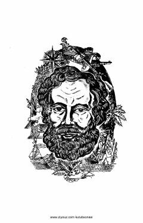

OBO'n besh yoshli o'smirning kema kapitani sifatida boshidan kechirgan hayajonli sarguzashtlari.
Jyul Vernning ushbu mashhur romanida o'n besh yoshli Dik Sendning kutilmagan vaziyatda kema kapitani bo'lib qolishi va boshidan kechirgan sarguzashtlari hikoya qilinadi. Qahramon o'z jasorati va aql-zakovati bilan qiyinchiliklarni yengib, do'stlarini qutqarishga harakat qiladi.